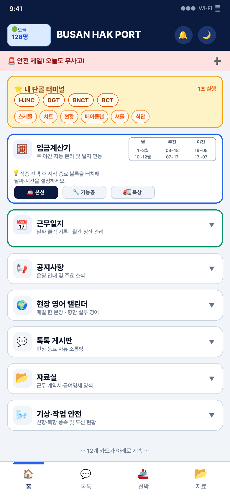
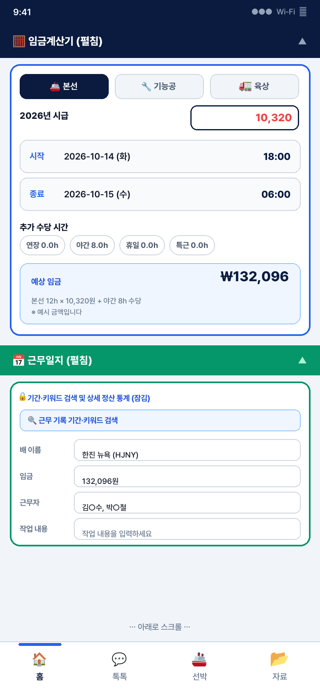
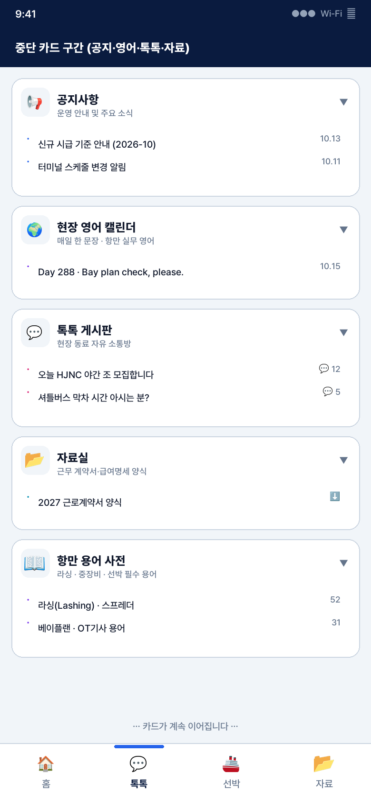
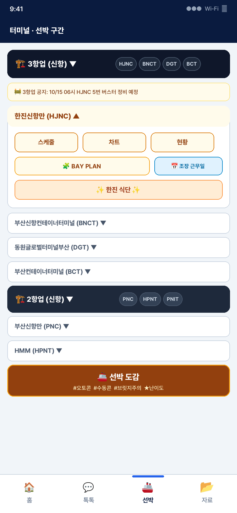
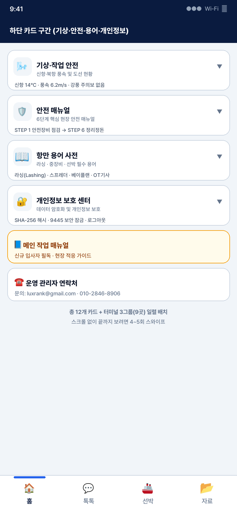
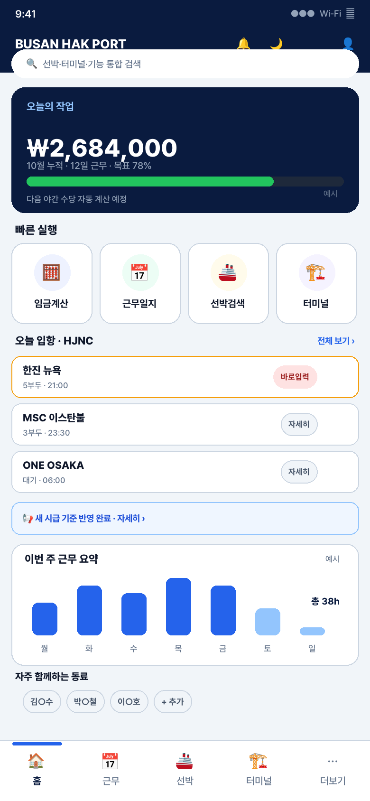
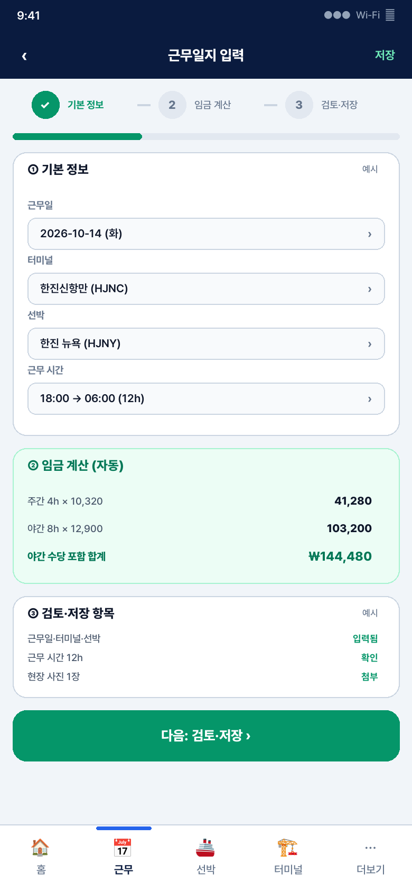
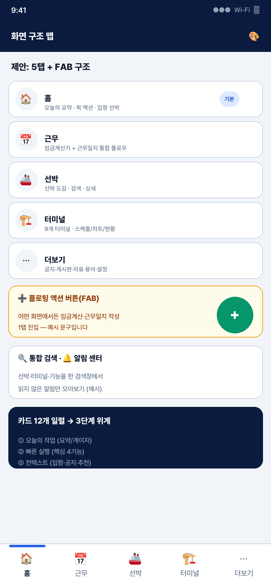

12개 카드의 긴 스크롤을 3단계 위계 + 5탭으로 재편합니다. 근거 수치부터 방안별 장단점, 단계별 계획, 목표 지표까지 — 보고서 요약과 현재 화면 5장·제안 목업 3장·비교 1장을 바로 확인하세요.
아래 수치는 저장소 public/index.html, app.css, js/*에서 직접 측정한 값입니다.
| 방안 | 장점 | 단점 |
|---|---|---|
| A. 카드 위계 재조정 경량 · 1~2주 |
즉시 배포, 학습 부담 최소 | 긴 스크롤·내비 혼합 잔존 |
| B. 5탭 + FAB 재편 권고 ★ |
핵심 도달 1~2탭, 역할 명확 | 4~6주 공사, 뒤로가기 정의 필요 |
| C. SPA 전면 전환 대규모 · 3~6개월 |
근본 개선, 독립 배포 | 리스크·회귀 테스트 부담 최대 |
✅ 권고: B축 + A의 상단 위계를 먼저 투입, C는 안정화 후 이관
총 6~9주 · 각 단계 종료 시 현장 피드백 반영
| 지표 | 현재 | 목표 |
|---|---|---|
| 핵심 기능 도달 | 스와이프 4~5회 | 1~2탭 |
| 근무일지 1건 입력 | 3분 30초 (예시) | 2분 이내 |
| 초기 렌더 (LCP) | — | 2.5초 이내 |
| 메인 HTML | 726KB | 3단계 400KB↓ |
| 인라인 스타일/핸들러 | 957 / 262 | 각 200 이하 |
헤더 → 안전 티커 → 단골 터미널 퀵바 → 임금계산기·근무일지(히어로) → 터미널 3그룹(9곳) → 선박 도감 → 공지·영어·톡톡·자료 → 기상·안전·용어·개인정보 → 매뉴얼 → 하단 내비 4탭
핵심 문제 4가지: P1 긴 스크롤P2 내비 혼합P3 발견성P4 구조 변경 비용
상세 근거·표는 보고서 원문 참조
이미지를 클릭하면 크게 볼 수 있습니다. (현재 화면 캡처는 실제 마크업 구조를 재구성한 렌더입니다.)

헤더·안전 티커·단골 터미널 바, 이어서 임금계산기·근무일지·카드 일렬 시작

직종 선택·시급·시간 입력과 예상 임금, 근무일지 검색·입력 폼

중단 카드 4~5개가 계속 이어지는 일렬 배치

HJNC 상세 버튼(스케줄·차트·현황·베이플랜·식단)과 아코디언 터미널

기상·안전·용어·개인정보·매뉴얼까지 스크롤 4~5회, 내비 4개

① 오늘의 작업 요약·게이지 ② 빠른 실행 4버튼 ③ 오늘 입항 칩 (숫자·문구 예시)

기본정보 → 임금계산(자동) → 검토·저장 스텝 구성 (예시 금액)

홈/근무/선박/터미널/더보기 5탭과 FAB, 통합 검색·알림 센터
긴 스크롤(4~5회) → 1~2탭 도달, 카드 12개 → 3단 위계, 목표 지표 화살표